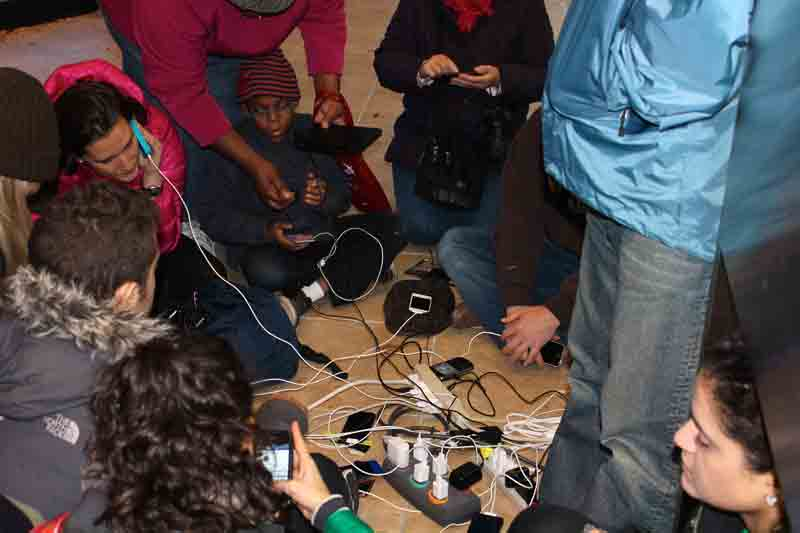

Scarcity and abundance in the digital age
Thankfully, for many people in the privileged world, food scarcity is an ancestral memory. We don’t have to scrounge over lunch so we’ll have something to eat for dinner.
Sandy reminded millions of people in the Northeast what scarcity felt like. When gasoline shortages hit, the thought that there might be a day or more without gas in the tank led to six-hour lines and occasional fistfights. Many grow up with a sense of unlimited… go ahead and gun the engine or throw out the extra, there’s more around the corner.
And yet, physical goods always manage to bump up against scarcity. There’s always one more shiny new thing to buy, one more mini-storage unit to rent. The media amplifies our envy of physical goods with reality TV shows and commercials about that next thing you ought to buy, if you hurry, if you can borrow to do so.
The digital world doesn’t offer similar scarcity. Two generations have grown up with the understanding that all music is available essentially for free, all the time. Our internet connections are largely unlimited–and when the limits do kick in, our entitlement comes out in the form of umbrage at the affront.
But economies are always based on scarcity (hence the term ‘economize’). There is no market for humming, for example, because everyone has unlimited humming at their disposal at all times. So, in the abundant digital world, what’s scarce? Where is the economy?
Who trusts you? Who wants to hear from you? Who will collaborate and support and engage with you?
These are things that don’t scale to infinity. These are precious resources.
When there was no power during Sandy, people had to decide (for the first time in a long time) if a song on their phone was worth listening to. Was it battery worthy? That’s the analysis that informs the connection economy–is it worth interrupting this person? Is my next action going to build a relationship or take from it? Am I earning trust or burning trust?
In the connection economy, we reward art and innovation and things worth talking about. We seek out transparency and generosity and the long-term. Sure, there are still people who will profit in the short-run by burning the assets they’ve got, but as we get ever more connected, that’s just not going to scale.
Connection and leadership and trust are going to get ever more valuable. Sure, go ahead and shake your head in agreement, but when you get back to work, are you busy working in the scarce universe or trying to build a place for yourself in the new one?